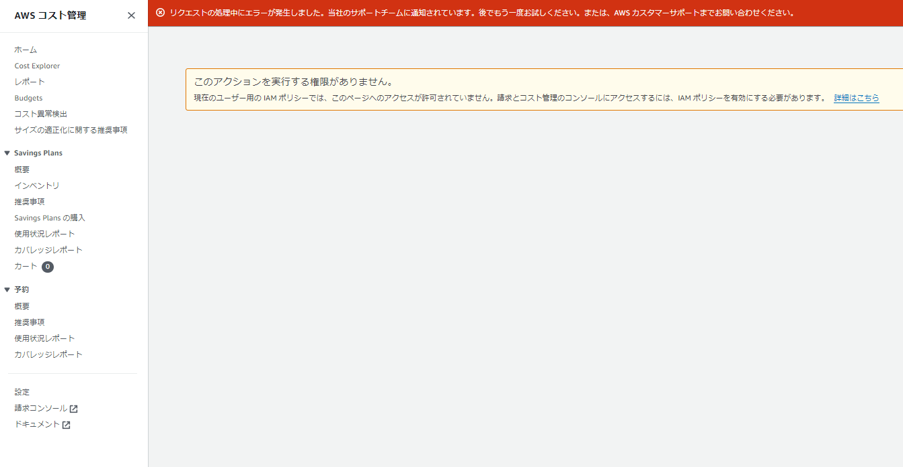
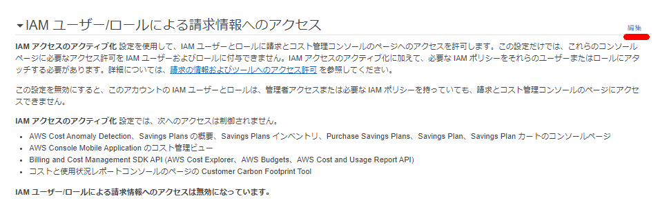
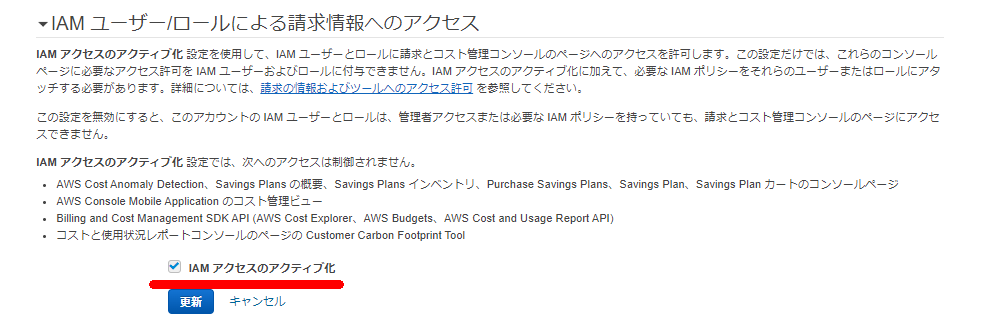
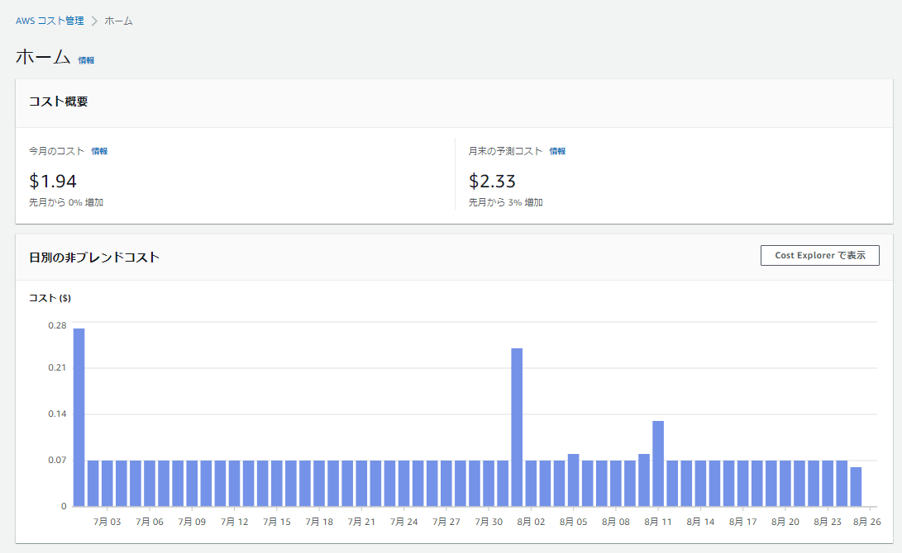

画面

該当ページ
IAMユーザにAdministratorAccess権限が付与されていてもコスト管理のページは見れない模様
IAM アクセスをアクティベートするだけでは、これらの請求ンソールページに必要な許可は IAM ユーザーとロールに付与されません。IAM アクセスのアクティベートに加えて、必要な IAM ポリシーをこれらのユーザーまたはロールにアタッチする必要があります。詳細については、「AWS Billing でアイデンティティベースのポリシー (IAM ポリシー) を使用する」を参照してください。
[IAM アクセスをアクティベートする] 設定をアクティベートするには、ルートユーザーの認証情報を使用して AWS アカウントにログインしてから、マイアカウントページで設定を選択する必要があります。請求コンソールページへの IAM ユーザーおよびロールのアクセスを許可する各アカウントで、この設定をアクティベートします。AWS Organizations を使用する場合は、コンソールページへの IAM ユーザーとロールのアクセスを許可する各管理アカウントまたはメンバーアカウントでこの設定をアクティベートします。
手順
請求情報とコスト管理コンソールへの IAM ユーザーおよびロールのアクセスをアクティベートするには
- ルートアカウント認証情報 (具体的には、AWS アカウントの作成に使用した E メールアドレスとパスワード) で AWS マネジメントコンソール にサインインします。
- ナビゲーションバーでアカウント名を選択してから、[マイアカウント] を選択します。
- [IAM User and Role Access to Billing Information] の横で、[Edit] を選択します。
- [Activate IAM Access] (アクセスのアクティブ化) チェックボックスをオンにして、Billing and Cost Management ページへのアクセスをアクティブ化します。
- [Update] (更新) を選択します。


正常にルートユーザ以外でもコスト管理の画面が見れるようになった
